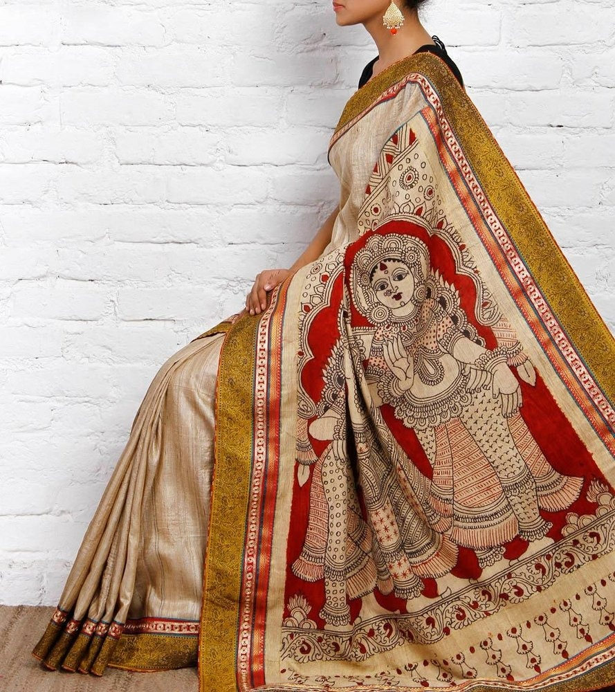

Kalamkari Saree:
The saree in the image is a beautiful example of Kalamkari art, which originated in Andhra Pradesh, India. Kalamkari is a type of hand-painted or block-printed cotton textile, and the word "kalamkari" comes from the Persian words "qalam" (pen) and "kari" (craft).Kalamkari designs are created using natural dyes and either a bamboo pen or wooden blocks.Kalamkari designs often feature intricate motifs such as flowers, animals, and mythological figures.alamkari sarees are typically brightly colored, with reds, yellows, and greens being common. Kalamkari dyes are made from natural materials such as plants and minerals.